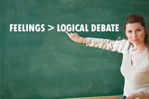

Redpillschool is the head moderator for TheRedPill, and launched Puerarchy.com in the summer of 2013 to focus on analyzing feminism's effects on the roles of men in western culture.


In the world of feminism, if there’s one thing I’ve learned it’s that you don’t have to be right to declare a set of beliefs. You see, in this new era of post-modern discourse, the only important thing that you need in order to stake a belief is feelings — emotions.
I see it every day- in colleges, on television, and in the news: Science and objective reality come second to subjective experience and the self. Want to see a news report about rape? It’s not authentic unless there’s a rape victim doing the speaking.
I’m the head moderator of the reddit forum: TheRedPill, and though we’re young, I’ve already watched over or participated in countless thousands of debates on just about any subject: rape, marriage, relationships, religion, politics, science, even philosophy.
Without fail, whenever a debate happens, there is a clash of these differing debate styles. It begins with two people making their claims and providing their respective supporting evidence… but it ends when the victim arrives with the unquestionable wisdom that only their experience can bring.
“You see, the reason pickup artistry is rape….” the rape victim will lead with their conclusion, “…is because I have been raped, and I know how easy it is to be raped.”

This bit of reasoning wouldn’t hold up to any scrutiny 50 years ago, but as our culture has grown more and more hyper-sensitive to victimhood, it has now been elevated to default status in women’s studies courses world-wide. Your feelings on and relationship to a subject are now just as relevant as any fact, in fact more so.
Since TheRedPill resides on a primarily liberal site, we’ve become no strangers to trolls and haters: a self-proclaimed forum of “blue pillers” who adamantly disagree with anything the masculine bloggers write, and certainly everything that men discuss between themselves. The tell-tale mark of these so-called “blue pillers” is their adherence to post-modern discourse.
What strikes me about this is that their entire mantra is that the people who read and visit these blogs, forums, and books are inherently manipulative, mistaken, abusive, and most importantly: wrong.
How these men have decided to live their lives, what goals they’ve made for themselves, and what personal beliefs they maintain are all presumed wrong.
And sure enough, we’ve seen every type of shaming tactic they can throw at us. “Man-children, peter-pans, boys, insecure children, sociopaths, assholes, rapists…” We’ve heard them all.
At the core of their belief system, these men that are going their own way are wrong. They have to be wrong– in their thought processes, in their conclusions, in their observations, and even in their experiences. Wrong, wrong, wrong, wrong! And boy do the fembots and white knights ever spend a lot of time trying to convince everybody of just that.
They must be forgetting something: the very lesson that our fem-centric society taught us! We don’t have to be right.
It doesn’t matter how much men are shamed. In fact, that makes men stronger in their beliefs.
It doesn’t matter how much men are taxed. In fact, that makes men stronger in their actions (or inactions).
It doesn’t matter how much men are told they’re wrong. Because they don’t have to be right.
I don’t speak for everybody, and I know that the “manosphere” is loosely knit and widely varied. This aside, there is still a common theme– a sort of brotherhood network of idea and philosophy sharing. If these ideas, blogs, forums and people are the fabric of the manosphere, then the thread tying us all together is our discontent.
In the words of Rollo Tomassi:
“You cannot negotiate Desire.”
Truer words have never been spoken. I can’t reason a woman into loving me any more than she can convince me to be happy with the status quo.
Every day I wake up to another group of people and another group of posts all trying to prove the same thing: Men going their own way or embracing game are wrong. But that doesn’t matter. All that matters is that we are discontent and taking actions to rectify these problems. I mean, we are talking about emotions here, feminism, we don’t have to be right.
In related news, the mods of TheRedPill just recently launched our new site: puerarchy.com to address this so-called movement of men who aren’t manning-up. Check it out.
Previously: Can The Red Pill Subreddit Survive?